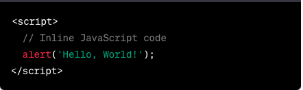

HTML Document: It consists of HTML elements and HTML tags, which are used to structure and format the content.
Structure and format of HTML consists of DOCTYPE, HTML element, Head section, Body section, HTML elements and tags, and HTML attributes.
HTML element: It is the element plus the opening and closing tags of the element.
HTML Tags: They are the opening and closing tags, excluding the element itself. 

In the above example, an HTML document with a deferred script is shown.
The defer attribute indicates that the script should be executed after the HTML document is parsed. This allows the browser to continue parsing the HTML without blocking the script execution. Additionally, the order of scripts is preserved.
You can place your JavaScript code within the script.js file, and it will be executed after the HTML document is parsed. The src attribute matches the file path of script.js.